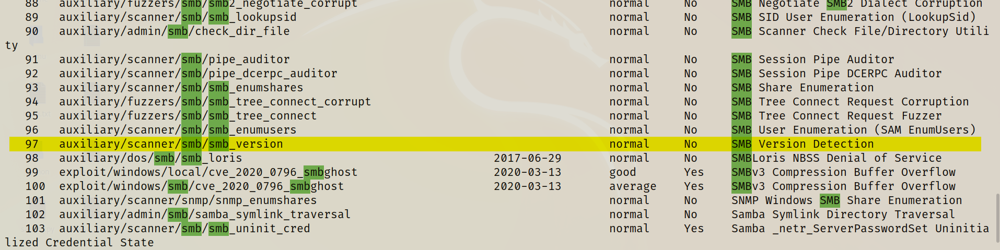
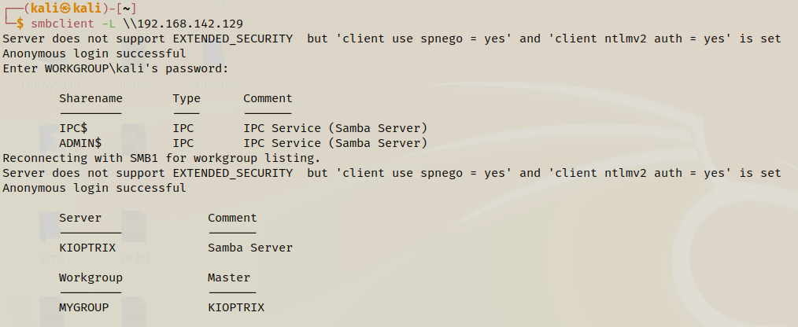

- Will enumerate some web-pages on port 80 and 443
- SMB is a file share which is commanly used in work environment and internal environment.
- We think of a attack (i.e. MS 17010) which is the latest and the greatest of all.
- Will use a tool called Metasploit which is a exploitation framework and it does more than exploitation (i.e. auxiliary modules).
command : msfconsle
- Search for msb
command : search msb
- we are getting 100's of result and will find something called smb enumeration & we know auxiliary modules are called as enumeration.
- Will find auxiliary/scanner/smb/smb_version from the result and will use/load that module
command : use auxiliary/scanner/smb/smb_version
command : use 97

- We can put the whole name or can only use the number to load the module.
Commands we can use here is
- info or options
- RHOSTS stands for remote host which is the Victim that we will attack.
- LHOSTS stands for local host.
command : set RHOSTS 192.168.142.129
command : run

-Now will use a tool called smbclient which will try to connect to the file share that is out there anonymously access.
command : smbclient -L \\\\192.168.142.129\\ or smbclient -L \\192.168.142.129
where -L is used to list the files
- As we were not able to get any access (i.e. ADIM / IPC)
